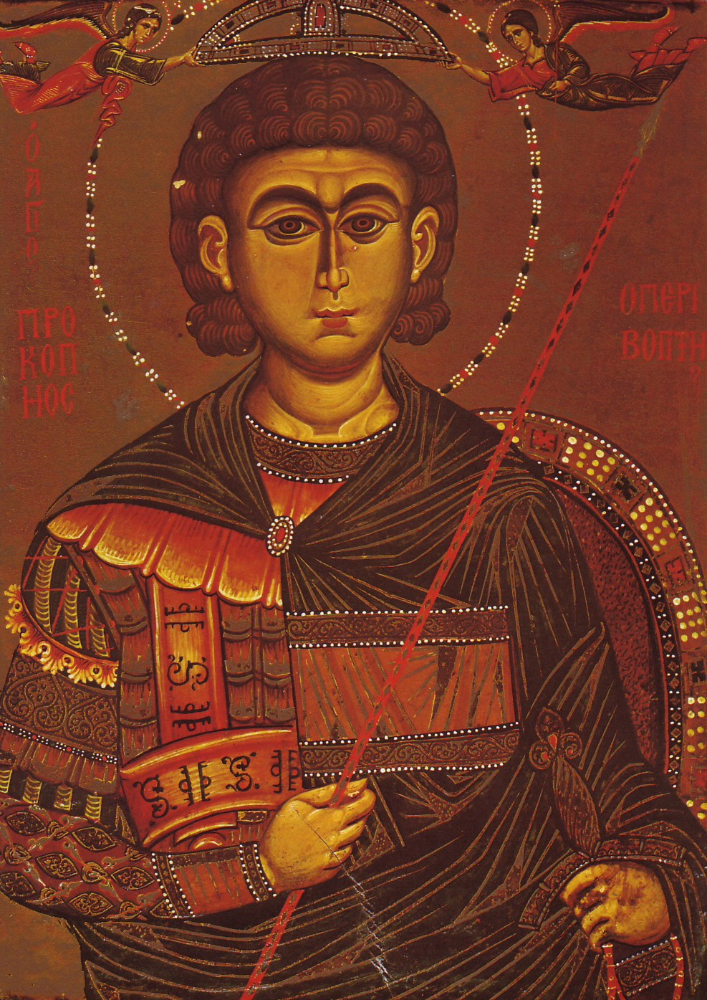
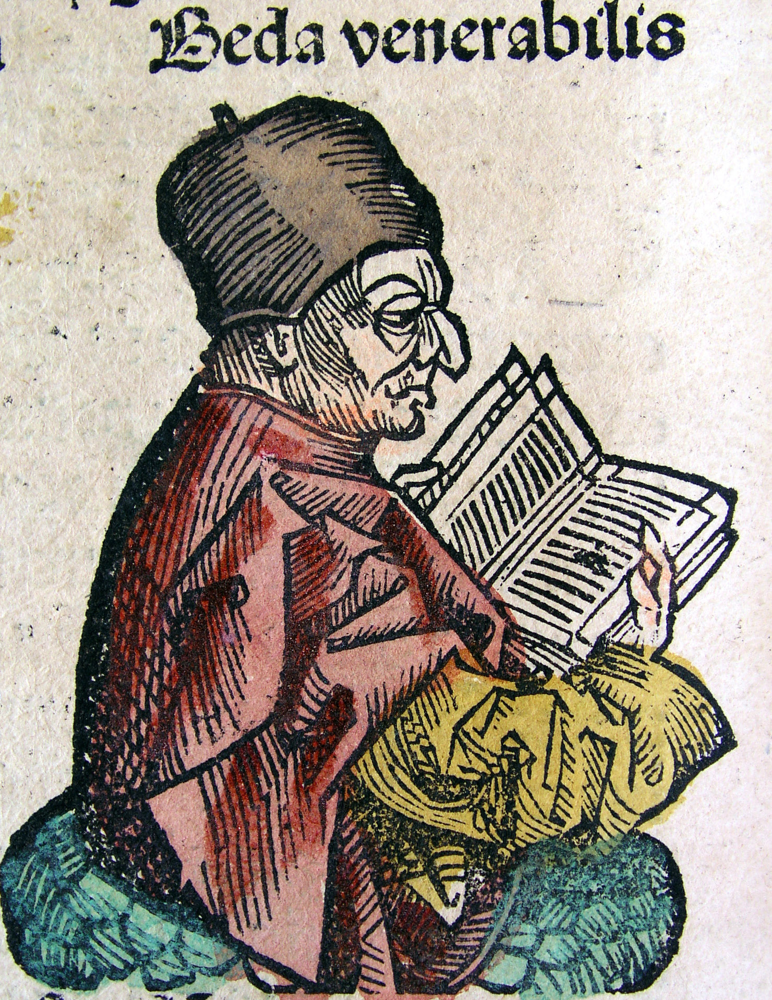

Byzantine Sources
Constantinople was not the first city struck by the plague, but it is the one that left us the most complete account of the outbreak in the city. Written by Procopius, the author of several treatises on wars and infrastructure, the plague narrative that comes from Constantinople tracks the outbreak and its effect on society, using language that is highly reminiscent of Thucydides' earlier account of plague in Athens.
Now the disease in Byzantium ran a course of four months, and its greatest virulence lasted about three. And at first the deaths were a little more than the normal, then the mortality rose still higher, and afterwards the tale of dead reached five thousand each day, and again it even came to ten thousand and still more than that. Now in the beginning each man attended to the burial of the dead of his own house, and these they threw even into the tombs of others, either escaping detection or using violence; but afterwards confusion and disorder everywhere became complete. For slaves remained destitute of masters, and men who in former times were very prosperous were deprived of the service of their domestics who were either sick or dead, and many houses became completely destitute of human inhabitants. For this reason it came about that some of the notable men of the city because of the universal destitution remained unburied for many days.
And it fell to the lot of the emperor, as was natural, to make provision for the trouble. He therefore detailed soldiers from the palace and distributed money, commanding Theodorus to take charge of this work; this man held the position of announcer of imperial messages, always announcing to the emperor the petitions of his clients, and declaring to them in turn whatever his wish was. In the Latin tongue the Romans designate this office by the term Referendarius. So those who had not as yet fallen into complete destitution in their domestic affairs attended individually to the burial of those connected with them. But Theodorus, by giving out the emperor's money and by making further expenditures from his own purse, kept burying the bodies which were not cared for. And when it came about that all the tombs which had existed previously were filled with the dead, then they dug up all the places about the city one after the other, laid the dead there, each one as he could, and departed; but later on those who were making these trenches, no longer able to keep up with the number of the dying, mounted the towers of the fortifications in Sycae [Galata], and tearing off the roofs threw the bodies there in complete disorder; and they piled them up just as each one happened to fall, and filled practically all the towers with corpses, and then covered them again with their roofs. As a result of this an evil stench pervaded the city and distressed the inhabitants still more, and especially whenever the wind blew fresh from that quarter. - Procopius, History of the Wars.
Roman Sources
Evagrius’ narrative of the plague is the most personal extant report; he survived a personal experience with the plague (much like Thucydides) but lost many members of his family. As an aide to Gregory, Evagrius was at the heart of the same outbreak that drove the Pope to give his speech to the people of Rome, and his chronicle is quite weighted by his profession and his belief. The plague appears in his text outside of the main narrative to describe the origins of a plague saint (Thomas) believed to have ended an occurrence of the disease with his death. Evagrius was living in Rome when he wrote his chronicle, but the events he cites occurred in Antioch during the reign of Justinian.
Thus it happened in my own case--for I deem it fitting, in due adaptation of circumstances, to insert also in this history matters relating to myself--that at the commencement of this calamity I was seized with what are termed buboes, while still a school-boy, and lost by its recurrence at different times several of my children, my wife, and many of my kin, as well as of my domestic and country servants; the several indictions making, as it were, a distribution of my misfortunes. - Evagrius, Ecclesiastical History.
North Africa and the Middle East
In 638/9, an Arab army at ‘Amwas was hit hard by an outbreak of plague, one that was preceded by an earthquake and a famine in Syria and Palestine. While the Muslim chroniclers were not quite as verbose when it came to describing the plague, they do record the hadith set down to guide Arab armies when they encountered plague; these religious principles made it clear that the plague was mercy and martyrdom for the faithful and punishment for the infidel, and that Muslims should never enter or flee lands affected by the ta’un.
"How many brave horsemen and how many beautiful, chaste women were killed in the valley of 'Amwas. They had encountered the Lord but He was not unjust to them. When they died, they were among the non-aggrieved people in Paradise. We endure the plague as the Lord knows, and we were consoled in the hour of death." - Ibn ‘Asakir, History of Damascus.
Missionaries
Bede’s writings from modern England contain several references to plagues in Britain, although he is particularly given to using these outbreaks as illustrations of the power of God and the foolishness of the British people or the Saxon invaders. His first description, in book one, describes a famine, a year of plenty, and the greedy dissolution of piety amongst the laity and the priests. They suffer a terrible retribution in the form of a plague, but are still driven to invite the Saxons in.
Nor were the laity only guilty of these things, but even our Lord's own flock, and his pastors also, addicting themselves to drunkenness, animosity, litigiousness, contention, envy, and other such like crimes, and casting off the light yoke of Christ. In the meantime, on a sudden, a severe plague fell upon that corrupt generation, which soon destroyed such numbers of them, that the living were scarcely sufficient to bury the dead: yet, those that survived, could not be withdrawn from the spiritual death, which their sins had incurred, either by the death of their friends, or the fear of their own. Whereupon, not long after, a more severe vengeance, for their horrid wickedness, fell upon the sinful nation. - Bede, Ecclesiastical History.